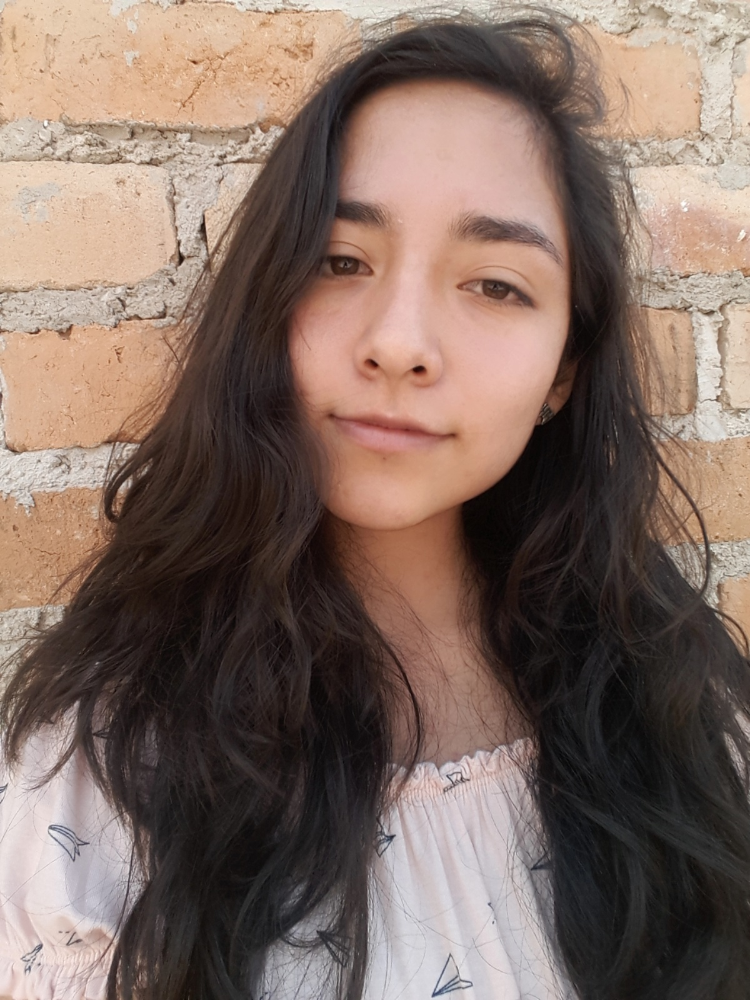

SOBRE MI

Soy Claudia, tengo 20 años, cajamarquina de nacimiento. Actualmente estoy estudiando Ingeniería de Sistemas en la Universidad Nacional de Cajamraca, curso el noveno ciclo. Disfruto mucho de la naturaleza, el cine y los viajes. Mi felicidad se basa en mi mamá principalmente.